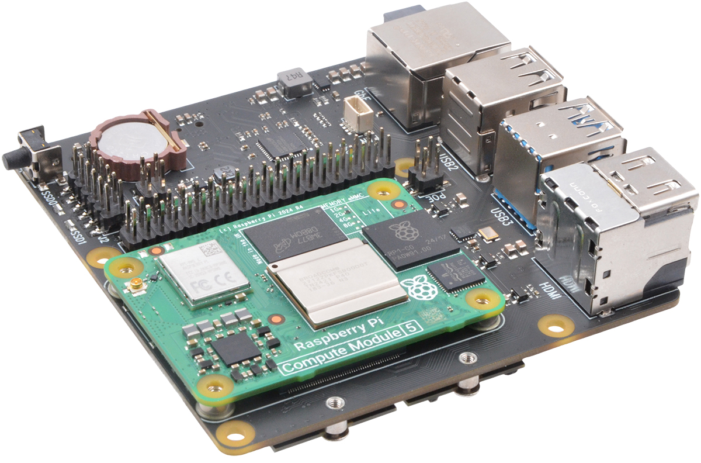

Produkty¶
Chytrá domácnost¶
Domácí Server Malina 5¶

Kompletní řešení pro správu a automatizaci vaší chytré domácnosti
Jedná se o výkonný domácí server postavený na nejnovější technologii Raspberry Pi 5 s pokročilou deskou Suptronics X1500, kterou provozuje operační systém Raspberry Pi OS. Toto zařízení slouží jako centrální automat pro veškeré funkce vaší chytré domácnosti.
Technické specifikace¶
- Procesor: Raspberry Pi 5 Compute module (4GB RAM, 32GB eMMC)
- Rozšiřující deska: Suptronics X1500
- Uložiště NVMe SSD 250GB
- Operační systém: Raspberry Pi OS + vlastní rozšíření
- Dostupný software:
- Home Assistant - intuitivní platforma pro správu chytré domácnosti
- MQTT - protokol pro komunikaci IoT zařízení
- Zigbee2MQTT - rozhraní technologie pro propojení senzorů a přístrojů
Klíčové výhody¶
✅ Nízká energetická spotřeba - ideální pro nepřetržitý provoz 24/7
✅ Dostatečný výkon - plynulá obsluha všech funkcí chytré domácnosti
✅ Centrální řídící systém - snadné propojení všech senzorů a zařízení od různých výrobců do jednoho rozhraní
✅ Bezpečnost a soukromí - data zůstávají v domácnosti
✅ Snadné rozšiřování - podpora dalších zařízení a služeb
Možnosti rozšíření¶
- NAS úložiště - rozšíření o pevné disky (NVMe SSD v režimu RAID) s větší kapacitou pro zálohování a archivaci dat
- Další moduly a integrační prvky podle vašich potřeb
Správa a údržba¶
🌐 Vzdálený přístup - nabízíme možnost vzdálené kontroly bez fyzické přítomnosti
⚙️ Flexibilní konfigurace - snadné přizpůsobení podle vašich specifických požadavků a přání